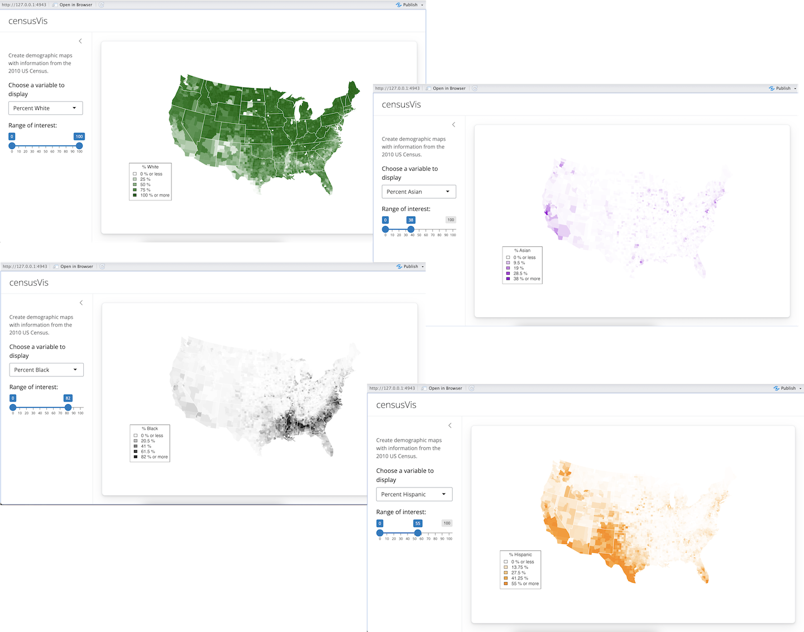

Use R scripts and data
This lesson will show you how to load data, R Scripts, and packages to use in your Shiny apps. Along the way, you will build a sophisticated app that visualizes US Census data.

counties.rds
counties.rds is a dataset of demographic data for each county in the United States, collected with the UScensus2010 R package. You can download it here.
Once you have the file,
- Create a new folder named
datain yourcensus-appdirectory. - Move
counties.rdsinto thedatafolder.
When you’re done, your census-app folder should look like this.
{kind=link}
The dataset in counties.rds contains
- the name of each county in the United States
- the total population of the county
- the percent of residents in the county who are White, Black, Hispanic, or Asian
counties <- readRDS("census-app/data/counties.rds")
head(counties)
name total.pop white black hispanic asian
1 alabama,autauga 54571 77.2 19.3 2.4 0.9
2 alabama,baldwin 182265 83.5 10.9 4.4 0.7
3 alabama,barbour 27457 46.8 47.8 5.1 0.4
4 alabama,bibb 22915 75.0 22.9 1.8 0.1
5 alabama,blount 57322 88.9 2.5 8.1 0.2
6 alabama,bullock 10914 21.9 71.0 7.1 0.2helpers.R
helpers.R is an R script that can help you make choropleth maps, like the ones pictured above. A choropleth map is a map that uses color to display the regional variation of a variable. In our case, helpers.R will create percent_map, a function designed to map the data in counties.rds. You can download helpers.R here.
helpers.R uses the maps and mapproj packages in R. If you’ve never installed these packages before, you’ll need to do so before you make this app. Run
install.packages(c("maps", "mapproj"))Save helpers.R inside your census-app directory, like below.
{kind=link}
The percent_map function in helpers.R takes five arguments:
| Argument | Input |
|---|---|
var |
a column vector from the counties.rds dataset |
color |
any character string you see in the output of colors() |
legend.title |
A character string to use as the title of the plot’s legend |
max |
A parameter for controlling shade range (defaults to 100) |
min |
A parameter for controlling shade range (defaults to 0) |
You can use percent_map at the command line to plot the counties data as a choropleth map, like this.
library(maps)
library(mapproj)
source("census-app/helpers.R")
counties <- readRDS("census-app/data/counties.rds")
percent_map(counties$white, "darkgreen", "% White")Note: The code above assumes that census-app is a sub-directory in your working directory. Make certain to set your working directory as the parent directory for census-app. To change your working directory location, click on Session > Set Working Directory > Choose Directory… in the RStudio menu bar.
percent_map plots the counties data as a choropleth map. Here it will plot the percent of white residents in the counties in the color dark green.
{kind=link}
Loading files and file paths
Take a look at the above code. To use percent_map, we first ran helpers.R with the source function, and then loaded counties.rds with the readRDS function. We also ran library(maps) and library(mapproj).
You will need to ask Shiny to call the same functions before it uses percent_map in your app, but how you write these functions will change. Both source and readRDS require a file path, and file paths do not behave the same way in a Shiny app as they do at the command line.
When Shiny runs the commands in server.R, it will treat all file paths as if they begin in the same directory as server.R. In other words, the directory that you save server.R in will become the working directory of your Shiny app.
Since you saved helpers.R in the same directory as server.R, you can ask Shiny to load it with
source("helpers.R")Since you saved counties.rds in a sub-directory (named data) of the directory that server.R is in, you can load it with.
counties <- readRDS("data/counties.rds")You can load the maps and mapproj packages in the normal way with
library(maps)
library(mapproj)which does not require a file path.
Execution
Shiny will execute all of these commands if you place them in your app.R script. However, where you place them will determine how many times they are run (or re-run), which will in turn affect the performance of your app, since Shiny will run some sections your app.R script more often than others.
Shiny will run the whole script the first time you call runApp. This causes Shiny to execute the server function.
{kind=link}
Shiny saves the server function until a new user arrives. Each time a new user visits your app, Shiny runs the server function again, one time. The function helps Shiny build a distinct set of reactive objects for each user.
{kind=link}
As users interact with the widgets and change their values, Shiny will re-run the R expressions assigned to each reactive object that depend on a widget whose value was changed. If your user is very active, these expressions may be re-run many, many times a second.
{kind=link}
Here’s what we’ve learned so far:
- The
shinyAppfunction is run once, when you launch your app - The
serverfunction is run once each time a user visits your app - The R expressions inside
render*functions are run many times. Shiny runs them once each time a user change the value of a widget.
How can you use this information?
Source scripts, load libraries, and read data sets at the beginning of app.R outside of the server function. Shiny will only run this code once, which is all you need to set your server up to run the R expressions contained in server.
Define user specific objects inside server function, but outside of any render* calls. These would be objects that you think each user will need their own personal copy of. For example, an object that records the user’s session information. This code will be run once per user.
Only place code that Shiny must rerun to build an object inside of a render* function. Shiny will rerun all of the code in a render* chunk each time a user changes a widget mentioned in the chunk. This can be quite often.
You should generally avoid placing code inside a render function that does not need to be there. Doing so will slow down the entire app.
Your Turn 1
Copy and paste the following app.R file to your census-app directory. Then add
source("helpers.R")
counties <- readRDS("data/counties.rds")
library(maps)
library(mapproj)to your app.R script. Be sure to place the commands in an efficient location.
Note: This is the first of two steps that will complete your app. Choose the best place to insert the code above, but do not try to run the app. Your app will return an error until you replace # some arguments with real code in Your Turn 2.
ui.R
# User interface ----
ui <- page_sidebar(
title = "censusVis",
sidebar = sidebar(
helpText(
"Create demographic maps with information from the 2010 US Census."
),
selectInput(
"var",
label = "Choose a variable to display",
choices =
c(
"Percent White",
"Percent Black",
"Percent Hispanic",
"Percent Asian"
),
selected = "Percent White"
),
sliderInput(
"range",
label = "Range of interest:",
min = 0,
max = 100,
value = c(0, 100)
)
),
card(plotOutput("map"))
)
# Server logic ----
server <- function(input, output) {
output$map <- renderPlot({
percent_map( # some arguments )
})
}
# Run app ----
shinyApp(ui, server)Model Answer 1
Since your app only needs to load helpers.R and counties.rds once, they should go outside of the ui and server functions. This is also a good place to load the maps library (which percent_map uses).
library(maps)
library(mapproj)
source("helpers.R")
counties <- readRDS("data/counties.rds")
# User interface ----
ui <- page_sidebar(
title = "censusVis",
sidebar = sidebar(
helpText(
"Create demographic maps with information from the 2010 US Census."
),
selectInput(
"var",
label = "Choose a variable to display",
choices =
c(
"Percent White",
"Percent Black",
"Percent Hispanic",
"Percent Asian"
),
selected = "Percent White"
),
sliderInput(
"range",
label = "Range of interest:",
min = 0,
max = 100,
value = c(0, 100)
),
),
card(plotOutput("map"))
)
# Server logic ----
server <- function(input, output) {
output$map <- renderPlot({
percent_map( # some arguments )
})
}
# Run app ----
shinyApp(ui, server)You may wonder, “Won’t each user need their own copy of counties and percent_map?” (which would imply that the code should go inside of the server function). No, each user will not.
Keep in mind that your user’s computer won’t run any of the R code in your Shiny app. In fact, their computer won’t even see the R code. The computer that you use as a server will run all of the R code necessary for all of your users. It will send the results over to your users as HTML elements.
Your server can rely on a single global copy of counties.rds and percent_map to do all of the R execution necessary for all of the users. You only need to build a separate object for each user if the objects will have different values for each of your users.
Finishing the app
The census visualization app has one reactive object, a plot named "map". The plot is built with the percent_map function, which takes five arguments.
- The first three arguments,
var,color, andlegend.title, depend on the value of the select box widget. - The last two arguments,
maxandmin, should be the max and min values of the slider bar widget.
The server function below shows one way to craft reactive arguments for percent_map. R’s switch function can transform the output of a select box widget to whatever you like. However, the script is incomplete. It does not provide values for color, legend.title, max, or min. Note: the script will not run as is. You will need to finish the script before you run it, which is the task of Your Turn 2.
server <- function(input, output) {
output$map <- renderPlot({
data <- switch(input$var,
"Percent White" = counties$white,
"Percent Black" = counties$black,
"Percent Hispanic" = counties$hispanic,
"Percent Asian" = counties$asian)
percent_map(var = data, color = ?, legend.title = ?, max = ?, min = ?)
})
}Your Turn 2
Complete the code to build a working census visualization app.
When you’re ready to deploy your app, save your app.R file and run runApp("census-app"). If everything works, your app should look like the picture below.
You’ll need to decide
- how to create the argument values for
percent_map, and - where to put the code that creates these arguments.
Remember, you’ll want the argument values to switch whenever a user changes the associated widget. When you are finished, or if you get stuck, read on below for a model answer.
{kind=link}
Model Answers 2
# Load packages ----
library(shiny)
library(maps)
library(mapproj)
# Load data ----
counties <- readRDS("data/counties.rds")
# Source helper functions -----
source("helpers.R")
# User interface ----
ui <- page_sidebar(
title = "censusVis",
sidebar = sidebar(
helpText(
"Create demographic maps with information from the 2010 US Census."
),
selectInput(
"var",
label = "Choose a variable to display",
choices =
c(
"Percent White",
"Percent Black",
"Percent Hispanic",
"Percent Asian"
),
selected = "Percent White"
),
sliderInput(
"range",
label = "Range of interest:",
min = 0,
max = 100,
value = c(0, 100)
)
),
card(plotOutput("map"))
)
# Server logic ----
server <- function(input, output) {
output$map <- renderPlot({
data <- switch(input$var,
"Percent White" = counties$white,
"Percent Black" = counties$black,
"Percent Hispanic" = counties$hispanic,
"Percent Asian" = counties$asian)
color <- switch(input$var,
"Percent White" = "darkgreen",
"Percent Black" = "black",
"Percent Hispanic" = "darkorange",
"Percent Asian" = "darkviolet")
legend <- switch(input$var,
"Percent White" = "% White",
"Percent Black" = "% Black",
"Percent Hispanic" = "% Hispanic",
"Percent Asian" = "% Asian")
percent_map(data, color, legend, input$range[1], input$range[2])
})
}
# Run app ----
shinyApp(ui, server)A more concise version of the server function:
server <- function(input, output) {
output$map <- renderPlot({
args <- switch(input$var,
"Percent White" = list(counties$white, "darkgreen", "% White"),
"Percent Black" = list(counties$black, "black", "% Black"),
"Percent Hispanic" = list(counties$hispanic, "darkorange", "% Hispanic"),
"Percent Asian" = list(counties$asian, "darkviolet", "% Asian"))
args$min <- input$range[1]
args$max <- input$range[2]
do.call(percent_map, args)
})
}Recap
You can create more complicated Shiny apps by loading R Scripts, packages, and data sets.
Keep in mind:
- The directory that
app.Rappears in will become the working directory of the Shiny app - Shiny will run code placed at the start of
app.R, before theserverfunction, only once during the life of the app. - Shiny will run code placed inside
serverfunction multiple times, which can slow down the app.
You also learned that switch is a useful companion to multiple choice Shiny widgets. Use switch to change the values of a widget into R expressions.
As your apps become more complex, they can become inefficient and slow. Lesson 6 will show you how to build fast, modular apps with reactive expressions.